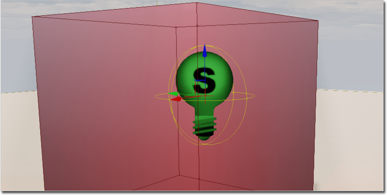
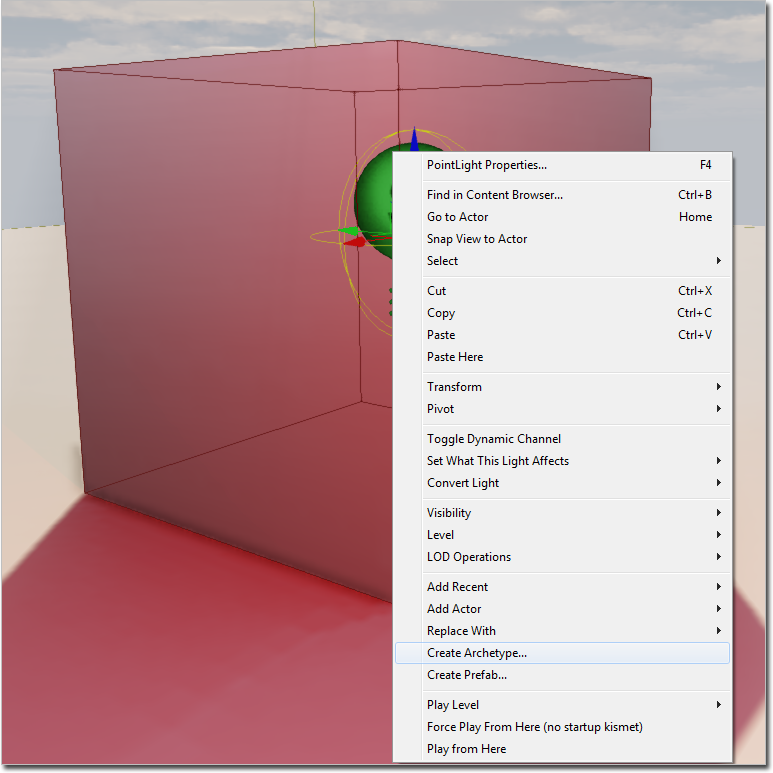
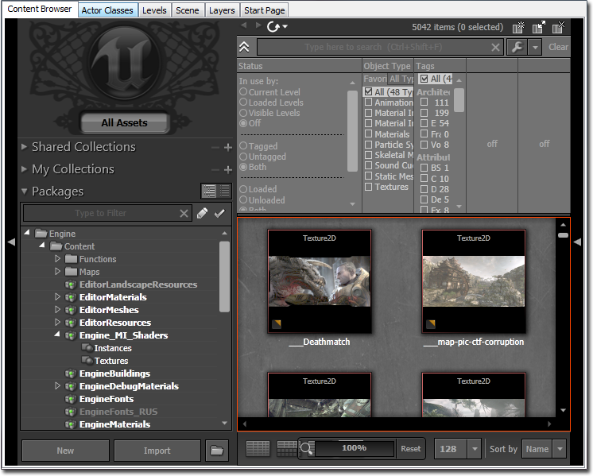
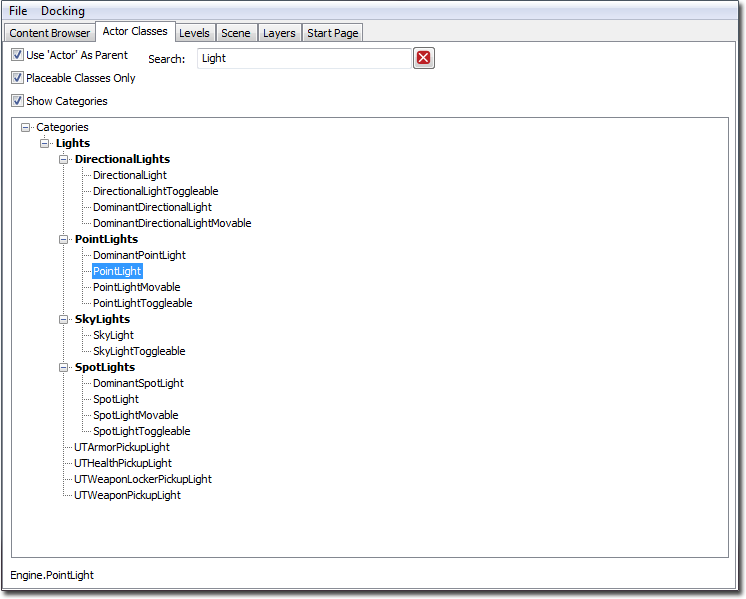
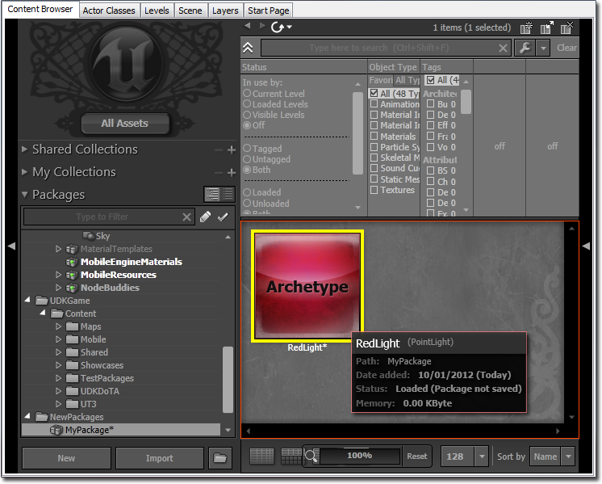
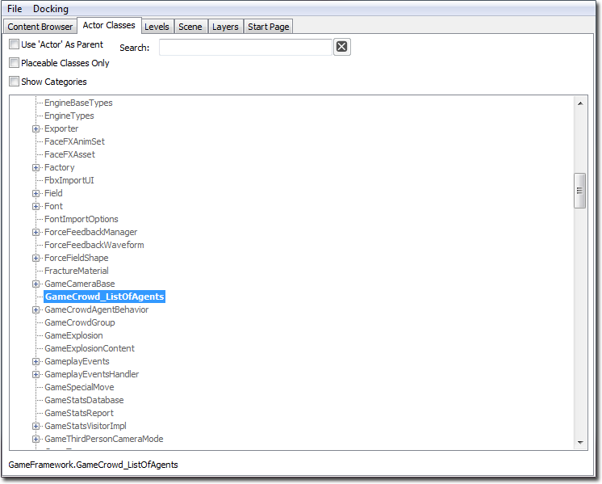
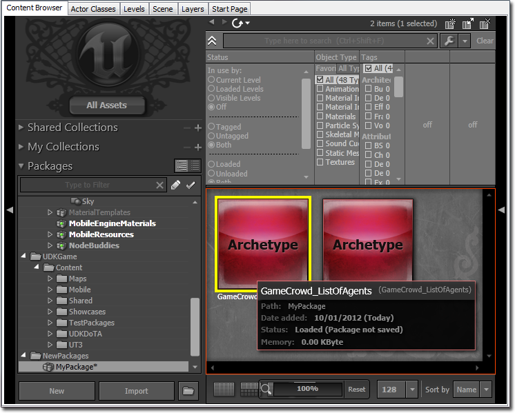
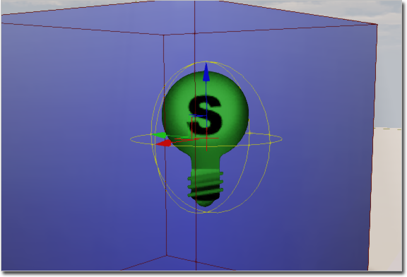
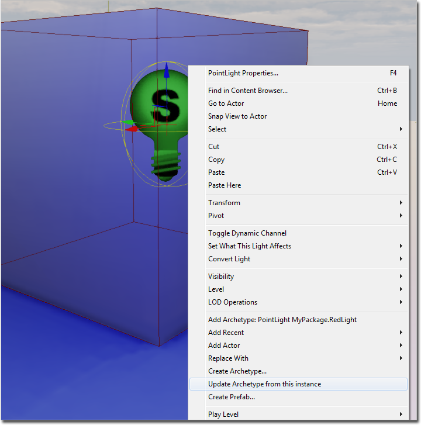

UDN
Search public documentation:
UsingArchetypesCH
English Translation
日本語訳
한국어
Interested in the Unreal Engine?
Visit the Unreal Technology site.
Looking for jobs and company info?
Check out the Epic games site.
Questions about support via UDN?
Contact the UDN Staff
日本語訳
한국어
Interested in the Unreal Engine?
Visit the Unreal Technology site.
Looking for jobs and company info?
Check out the Epic games site.
Questions about support via UDN?
Contact the UDN Staff
使用原型
概述
原型使内容开发人员可以对现有 Object（包括属性值、组件、对象参考）进行截图，然后将这个截图保存为可放置内容资源或者是可以在虚幻脚本中使用的模板。 原型存储在由内容开发人员管理的常规虚幻包文件中，同时允许内容开发人员将基于 actor 的“实例”的原型放置在地图和序列中，不需要程序人员的帮助。任何基于对象的原型仍然允许内容开发人员引用其他内容和属性，但是不会将它们放置在虚幻编辑器中。 如果内容开发人员在原型中更改了属性默认值，那么会自动将这个更改后的值传递到现有关卡和内容中的原型的所有实例中，那些已经自定义这个属性值的实例除外。对原型属性值所进行的更改会立即被传递到目前处于开放状态的关卡的实例中，而且会在下次加载其他包时将更改传递到这些包的实例中。您还可以根据本身就是其他原型的实例的 actor 创建原型。使用这种方法，您可以创建原型的复杂继承关系，其中每个原型“孩子”可以继承它的“父”原型中的默认值。
创建基于 actor 的原型
可以通过两种方法创建基于 actor 的原型。将可放置的 actor 放置到关卡中，并对它进行原型化处理，或者通过内容浏览器中的 Actor Classes 选项卡进行原型化处理。
通过关卡中的 actor 创建原型
要通过关卡中的 actor 创建一个原型，那么请选择您想要作为原型基础的 actor。
右击 actor 然后选择 Create Archetype（创建原型） 。
您将会看到一个让您为您的新原型资源选择位置的对话框。为这个包、名称和组[可选]字段输入您所希望使用的值，然后点击 OK。
通过内容浏览器中的 Actor Classes（Actor 类）选项卡创建原型
要通过内容浏览器中的 Actor Classes 选项卡创建一个原型，首先要打开内容浏览器。
切换到 Actor Classes（Actor 类）选项卡。 如果您没有看到 Actor Classes（Actor 类）选项卡，那么您还可以通过虚幻编辑器中的 Views（视图）菜单访问它。
如果您没有看到 Actor Classes（Actor 类）选项卡，那么您还可以通过虚幻编辑器中的 Views（视图）菜单访问它。
 查找并选择您希望进行原型处理的 actor 类。
查找并选择您希望进行原型处理的 actor 类。

右击然后选择 Create Archetype（创建原型） 。 您将会看到一个让您为您的新原型资源选择位置的对话框。为这个包、名称和组[可选]字段输入您所希望使用的值，然后点击 OK。
这个新的原型资源现在可以在内容浏览器中看到，它位于您在创建这个原型时制定的包中。在内容浏览器资源树中，点击包含您的新原型的包。在资源预览窗口中，您应该会看到带有 "Archetype" 字样的框，它代表您所创建的 Archetype（原型）。
您将会看到一个让您为您的新原型资源选择位置的对话框。为这个包、名称和组[可选]字段输入您所希望使用的值，然后点击 OK。
这个新的原型资源现在可以在内容浏览器中看到，它位于您在创建这个原型时制定的包中。在内容浏览器资源树中，点击包含您的新原型的包。在资源预览窗口中，您应该会看到带有 "Archetype" 字样的框，它代表您所创建的 Archetype（原型）。

创建基于对象的原型
创建基于对象的原型与通过内容浏览器中的 Actor Classes 选项卡创建基于 actor 的原型所使用的方法一样。首先，打开内容浏览器。 切换到 Actor Classes（Actor 类）选项卡。
如果您没有看到 Actor Classes（Actor 类）选项卡，那么您还可以通过虚幻编辑器中的 Views（视图）菜单访问它。
查找并选择您希望进行原型处理的对象类。您可能需要关闭过滤器，例如，"Use 'Actor' As Parent（使用 'Actor' 作为父代）"。

右击然后选择 Create Archetype（创建原型） 。 您将会看到一个让您为您的新原型资源选择位置的对话框。为这个包、名称和组[可选]字段输入您所希望使用的值，然后点击 OK。
这个新的原型资源现在可以在内容浏览器中看到，它位于您在创建这个原型时制定的包中。在内容浏览器资源树中，点击包含您的新原型的包。在资源预览窗口中，您应该会看到带有 "Archetype" 字样的框，它代表您所创建的 Archetype（原型）。
您将会看到一个让您为您的新原型资源选择位置的对话框。为这个包、名称和组[可选]字段输入您所希望使用的值，然后点击 OK。
这个新的原型资源现在可以在内容浏览器中看到，它位于您在创建这个原型时制定的包中。在内容浏览器资源树中，点击包含您的新原型的包。在资源预览窗口中，您应该会看到带有 "Archetype" 字样的框，它代表您所创建的 Archetype（原型）。

修改原型属性
使用标准属性编辑器窗口编辑原型的属性值。要打开原型资源的属性编辑器窗口，请通过选择包含这个原型的包将这个原型资源缩略图放置在内容浏览器中，然后选择与您想要修改的原型对应的原型资源缩略图。双击这个缩略图，或者右击它选择 Properties（属性）... 。将会显示这个原型资源的属性窗口。对这个原型属性值所进行的任何更改都会被立即传播给是该原型的实例以及目前加载的原型和基于这个原型的原型（"子"原型）的所有现有 actor。
将基于 actor 的原型放置在关卡中
要放置原型资源的实例，请在内容浏览器中选择这个原型资源缩略图，然后在其中一个关卡编辑视窗中右击调出关联菜单。将鼠标放在 Add Actor（添加 Actor） 项上打开 Actor 放置子菜单。选择 Add Archetype（添加原型）: {ArchetypeName} 选项将所选的原型的实例放置在关卡中。您可以通过为您刚刚放置的 actor 打开属性编辑器窗口然后展开 Object（对象） 类别来验证这个 actor 是否真的链接到这个原型。*ObjectArchetype* 属性的值应该是您用来放置这个 actor 的原型资源。这表示在加载这个 actor 的时候，它会自动从这个指定的原型资源中继承所有属性默认值。
 您可以使用 ObjectArchetype 属性确定 actor 所使用的原型（如果存在）。如果这个 actor 没有链接到一个原型，那么 ObjectArchetype 的值将会指向 actor 的类默认对象，它的名字格式通常是 Default__{ActorClass} （例如， Default__DirectionalLight ）。
下面的图片会显示 DirectionalLight_0 是 ExampleArchetypePackage.LightArchetype 原型资源的一个实例：
您可以使用 ObjectArchetype 属性确定 actor 所使用的原型（如果存在）。如果这个 actor 没有链接到一个原型，那么 ObjectArchetype 的值将会指向 actor 的类默认对象，它的名字格式通常是 Default__{ActorClass} （例如， Default__DirectionalLight ）。
下面的图片会显示 DirectionalLight_0 是 ExampleArchetypePackage.LightArchetype 原型资源的一个实例：

在关卡中通过实例更新基于 actor 的原型
通常修改关卡中进行原型处理的实例来实现想要得到的具体外观或属性更容易。不需要再手动检查将属性复制到放入包中的原型，您只需请求实例更新被它作为样本的原型。要进行这项操作，首先在关卡中选择进行原型处理的实例。

右击并选择 Update Archetype from this instance（通过这个实例更新原型） 。
由此，这个原型更新，同时其他实例应该也更新了它们自己。原型技术指南
要了解有关 UE3 中 Object Archetype（对象原型）幕后工作原理的技术方面说明，请参阅原型技术指南页面。